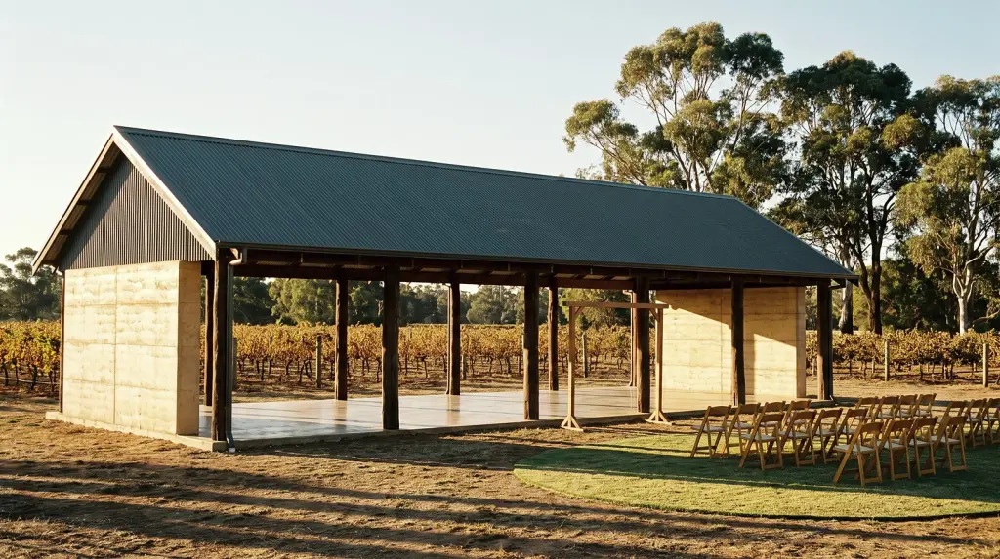
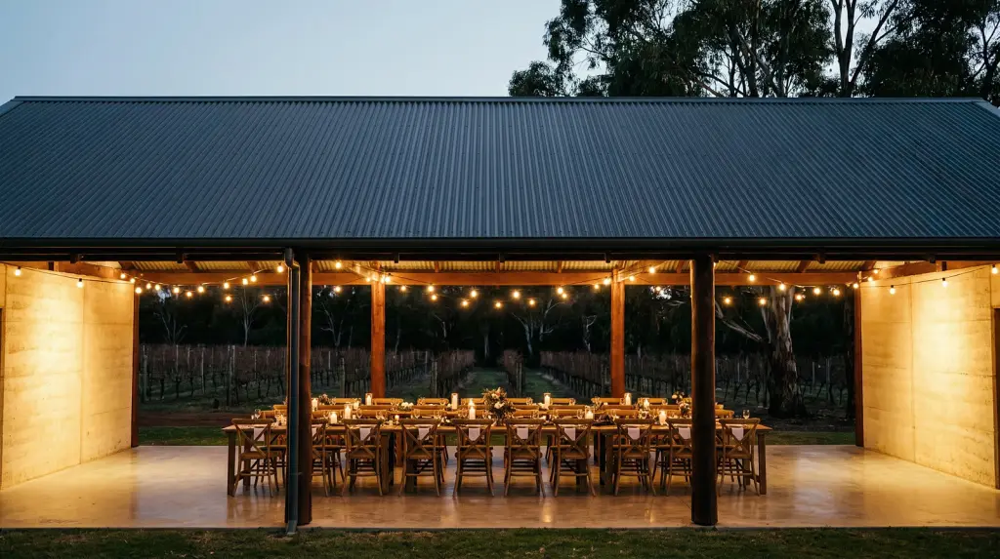
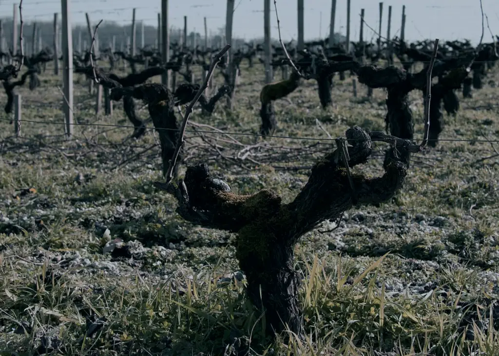
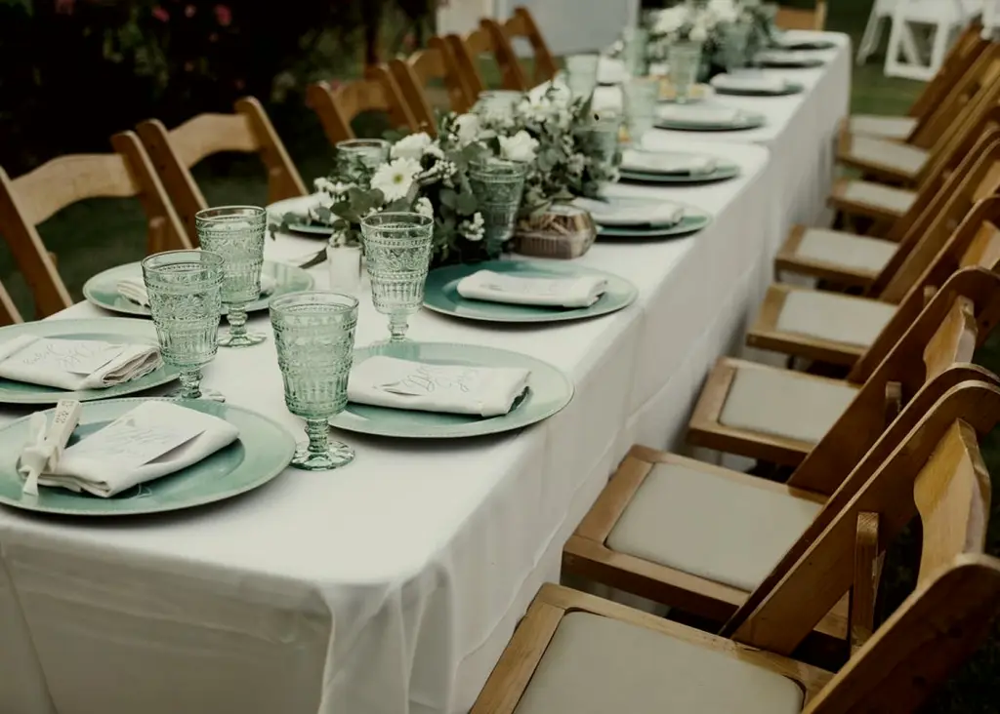

Rosa Brook · Margaret River, WA · Spring
One wedding
a week. Yours.
Forty hectares of cabernet and marri forest, an open-sided rammed-earth pavilion, and a rule we have never broken: one wedding a week, so the place is yours from the Friday.
Scroll, or choose a season
The year here
Four different venues,
on one piece of dirt.
The vines break bud in the first week of September and the whole place goes from bare sticks to green in about a fortnight. Cool mornings, warm afternoons, and the cheapest Saturdays of the year.
Now showing
September
Budburst · shoulder rate
Dates & cost
Every free weekend,
with the price on it.
One wedding a week, so what is free is a whole weekend, not a day. Pick one, choose whether you marry on the Friday, Saturday or Sunday, tell us how many are coming, and the number below is the number.
Each date is a weekend, Friday noon to Sunday noon. Struck out means booked. Dimmed months sit outside the season you have chosen.
The day · half past three
Ceremony
on the lawn.
A 4:30 ceremony gives you an hour of photographs before the light goes. Spring evenings turn cold quickly, so the fire in the pavilion gets lit around eight and nobody moves after that.
Seats 140 · wet weather moves under cover, same lawn, ten metres left

The day · from seven
Dinner under
the iron.
One table, ninety-six seats, straight down the middle of the pavilion. Past that we run a second table and the room stops feeling like one conversation, which is the only reason we mention the number at all.
Festoon lighting to midnight · music off at twelve, per the shire

The place
Built out of the paddock
it stands in.
The pavilion is rammed earth from the dam cut, jarrah poles from a wool shed in Nannup, and a Colorbond roof that makes rain sound like the best thing that ever happened to a wedding. It has no walls on the long sides, so the vineyard is the decoration and you can stop paying for flowers.

